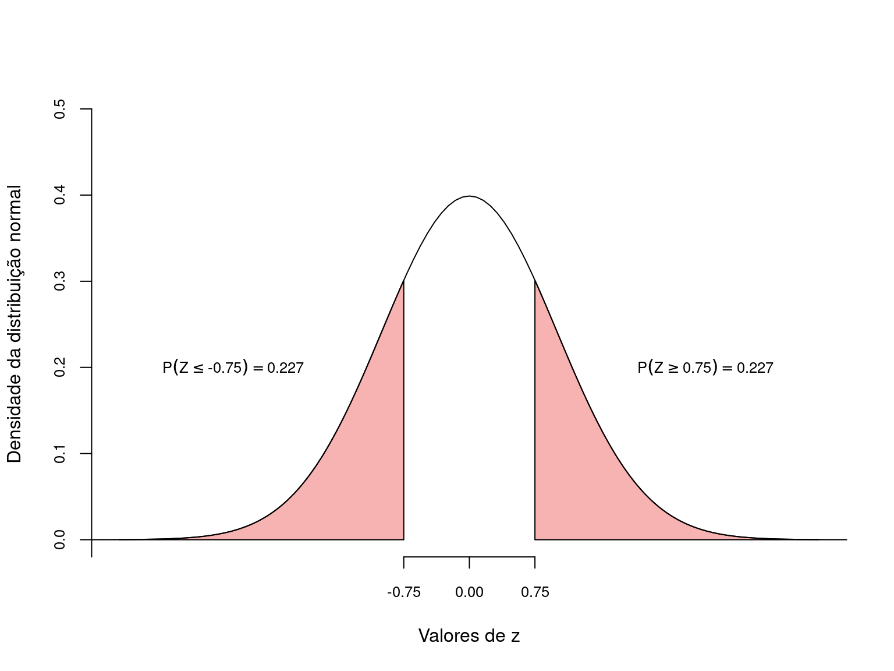

library(tidyverse)Introdução ao teste de hipóteses
Apresentação do teste de hipóteses, definições de hipóteses nula e alternativa, erros do tipo I/II e valor de p.
DicaPacotes, funções e base de dados utilizadas
Um dos objetivos centrais em estatística é fazer inferências válidas para a população examinando as características de uma amostra. Considere as afirmações abaixo:
A fragmentação de habitats reduz a diversidade de espécies;
Em níveis elevados de poluentes, a mortalidade de um determinado organismo aumenta;
A remoção da área de mangue implica na redução da captura de carbono.
Todas estas afirmações são na realidade hipóteses, sobre um ou mais parâmetros de uma população estatística que podem ser testadas por meio de experimentos adequados. A experimentação nos permite tirar conclusões sobre determitada hipótese com base na amostra. Mais especificamente, queremos saber se os dados em mãos nos permitem ou não refutar uma hipótese inicial. Portanto, se desejamos fazer uma inferência sobre um parâmetro da população estatística (ex.: sua média \(\mu\)), devemos iniciar com uma afirmação sobre a posição deste parâmetro, que denominamos de hipótese nula (\(H_0\)).
NotaUm exemplo
Imagine que um modelo de climático estabeleça que a pluviosidade média entre junho e agosto nas cidades litorâneas do estado de São Paulo seja de \(110\) mm/mês.
Um cientista acredita que o modelo têm falhas e resolve tomar algumas observações sobre chuva mensal a fim de testar esta afirmação. Este cientista inicia formulando as hipóteses estatísticas, definindo o limite de rejeição, conduzindo o experimento, e por fim realizando o teste de hipóteses.
- Hipoteses estatísticas: inicialmente é necessário estabelecer o que chamamos de hipótese nula. Se uma análise estatística concluir que a hipótese nula deve ser falsa, então precisaremos ter me mãos uma hipótese alternativa (\(H_a\)). Assim, no caso de rejeição de \(H_0\), passaremos a assumir \(H_a\) como verdadeira. Neste exemplo teríamos:
\(H_0: \mu = 110\) mm de chuva (HIPÓTESE NULA)
\(H_a: \mu \ne 110\) mm de chuva (HIPÓTESE ALTERNATIVA)
Limite de rejeição: é o limite a partir do qual iremos conlcuir que \(H_0\) é falsa. Este limite está baseado no que denominamos de nível de significância (\(\alpha\)) sobre o qual iremos falar adiante.
Experimentação: tomar amostras sobre o fenômeno em questão que nos permita tirar alguma conlusão sobre a veracidade de de \(H_0\). Note que as hipóteses nula e alternativa se referem a predições sobre a posição da média populaçional \(\mu\), que é justamente a informação que não temos, mas sobre a qual queremos conhecer. Como não temos acesso à \(\mu\), nossa opção é tomar amostras do fenômeno (i.e. quantidade de chuva em diferentes localidades), calcular a média amostral \(\overline{X}\) e compará-la com a média populacional descrita em \(H_0\).
Teste de hipóteses: é o teste formal que nos permite dizer, com base nos resultados do experimento se há evidências suficiente para rejeitar \(H_0\). Se não houver, concluímos que \(H_0\) é verdadeira. Caso contrário assumimos \(H_0\) como falsa e acitamos a hipótese alternativa \(H_a\).
1 Probabilidade e teste de hipóteses
A média \(\overline{X}\) de uma amostra será nossa melhor evidência a respeito de \(\mu\). Tendo este valor, podemos nos perguntar:
O valor obtido de \(\overline{X}\) é condizente com o esperado segundo \(H_0\)?
Caso \(\overline{X}\) esteja muito próximo a \(\mu\), não há evidências para rejeitar \(H_0\). Por outro lado, um valor de \(\overline{X}\) muito distante de \(\mu\) irá colocar em dúvida a afirmação estabelecida em \(H_0\). O ponto relevante aqui é decidirmos quão distante de \(\mu\) deve estar \(\overline{X}\) para que rejeitemos \(H_0\)? Esta resposta poderá ser respondida somente com o auxílio de um modelo probabilístico aplicado ao experimento em questão.
Seja \(H_0\) verdadeira, é esperado que a probabilidade de \(\overline{X}\) estar próximo a \(\mu\) é alta. Portanto, uma pergunta melhor formulada seria:
Sendo \(H_0\) verdadeira, qual é a probabilidade de que uma determinada média amostral \(\overline{X}\) esteja tão ou mais distante de \(\mu\) quanto o observado em nossa amostra particular?
1.1 Um modelo de distribuição das médias amostrais para testar \(H_0\)
A pergunta feita acima é de natureza probabilística, de modo que para respondê-la iremos precisar estabelecer um modelo probabilístico para a distribuição das médias amostrais. De acordo com o que temos discutido até este ponto, Teorema Central do Limite (TCL) estabelece que a distribuição normal é um bom modelo neste situação.
Desta forma, para um \(H_0\) verdadeiro, seria esperado que a distribuição das médias amostrais resultantes de um procedimento experimental tivesse o formato de um distribuição normal, centrada em \(110\) mm. Segundo o TCL, a distribuição seria centrada em \(\mu\) e o desvio padrão seria definido pelo erro padrão da média, isto é, \(\sigma_{\overline{X}} = \frac{\sigma}{\sqrt{n}}\).
Digamos ainda que o modelo climático estabeleça que desvio padrão para a quantidade de chuva seja \(\sigma = 30\). Neste caso, o erro padrão seria de \(\sigma_{\mu} = \frac{30}{\sqrt{n}}\).
Feito isto, temos em mãos o modelo probabilístico que, aliado a uma amostra particular, nos permitirá concluir se há evidências para rejeitar \(H_0\) em favor de \(H_a\).
1.2 Definindo o limite de rejeição para \(H_0\): nivel de significância \(\alpha\)
Segundo a distribuição normal, a probabilidade do valor observado \(\overline{X}\) estar tão ou mais distante de \(\mu\) na distribuição \(Z\) é calculando por:
\[z = \frac{\overline{X} - \mu}{\sigma_{\overline{X}}}\]
O valor de \(z\) calculado é chamado de estatitica do teste. Com o uso da Tabela \(Z\), esta estatística será utilizada para encontrar:
\[P(Z \ge z) = P(\overline{X} \ge \mu)\] A probabilidade \(P(Z \ge z)\) é encontrada na distribuição normal padronizada em que \(Z \sim \mathcal{N}(0,\,\frac{\sigma}{\sqrt{n}})\) e como nossa pergunta se refere à distância entre \(\overline{X}\) e \(\mu\), devemos encontar também \(P(Z \le -z)\), de modo que a probabilidade que nos interessa é denominada de valor de p de um teste de hipóteses:
\[p = P(Z \ge |z|)\]
O valor de \(p\) é a área destacada em vermelho da distribuição normal padronizada:

A área destacada em vermelho diminui conforme \(\overline{X}\) se distancia de \(\mu\) e aumenta se \(\overline{X}\) está próximo a \(\mu\).
NotaO valor de p e nível de significância
Mede a probabilidade de encontrarmos \(\overline{X}\) tão ou mais distante de \(\mu\), assumindo que \(H_0\) seja verdadeira. Se \(p\) for muito pequeno, a probabilidade de que \(\overline{X}\) seja condizente com \(H_0\) diminui. Neste caso dizemos que é improvável que \(\overline{X}\) seja proviniente de \(H_0\), o que nos leva levando a rejeitar a hipótese nula em favor de \(H_a\).
A decisão de rejeitar \(H_0\) depende do limite de rejeição \(\alpha\), também chamado de nivel crítico ou nível de significância. A definir o valor de \(\alpha\), a conclusão de um teste estatístico se dá por (Figura 2):
Se \(p > \alpha\) –> ACEITAMOS \(H_0\), \(\overline{X}\) está próximo de \(\mu\)
Se \(p \le \alpha\) –> REJEITAMOS \(H_0\), \(\overline{X}\) está distante de \(\mu\). A assumimos \(H_a\) como verdadeira.

2 Exemplificando um teste de hipóteses: o teste \(Z\)
NotaDescrição do problema
Digamos que o número de batimentos cardíacos por minuto de um adulto em repouso tenha média \(\mu = 65\) e desvio padrão \(\sigma = 9\). Você imagina que o sedentarismo altera o batimento médio de um adulto.
- Hipóteses estatíticas:
\(H_0: \mu = 65\) batimentos por minuto
\(H_a: \mu \ne 65\) batimentos por minuto
- Limite de rejeição: determinamos o nível de significância (\(\alpha\)) do teste como \(\alpha = 0,05\).
IMPORTANTE: O nível de significância \(\alpha\) deve ser determinado antes da tomada de dados.
- Experimento: selecionamos uma amostra aleatória selecionando ao acaso \(n = 15\) pessoas de hábito sedentário e medimos seus batimentos cardíacos. Os resultados são:
Amostra: 65, 73, 56, 71, 69, 69, 68, 59, 73, 68, 69, 64, 67, 64, 66
que nos dá uma média amostral de:
\(\overline{X} = \frac{\sum{X_i}}{n} = \frac{65+73+56+71+69+69+68+59+73+68+69+64+67+64+66}{15} = 66.73\) batimentos por minuto;
e um erro padrão de:
\(\sigma_{\mu} = \frac{\sigma}{\sqrt{n}} = \frac{9}{3.87} = 2.32\)
- Teste de hipóteses: com estes resultados encontramos o valor correspondente de Z.
\(z = \frac{\overline{X} - \mu}{\sigma_{\mu}} = \frac{66.73 - 65}{2.32} = 0.75\)
e utilizando a Tabela Z , encontramos a probabilidade de obtermos valores tão ou mais extremos que \(-0.75\) e \(+0.75\).

Com isto, a probabilidade de encontarmos valores tão ou mais extermos que \(\overline{X} = 66.73\) foi calculada em \(0.227 + 0.227 =\) 0.453.
Neste exemplo, a estatística do teste foi \(z = 0.75\) o a probabilidade associada \(p = 0.453\).
NotaTeste Z no R
X <- c(65, 73, 56, 71, 69, 69, 68, 59, 73, 68, 69, 64, 67, 64, 66)
Xm <- mean(X)
pnorm(q = Xm, mean = 65, sd = 9/sqrt(15), lower.tail = FALSE) * 2[1] 0.45572313 Tomada de decisão sobre \(H_0\): nível de significância
No exemplo anterior, obtivemos \(p =\) 0.453. Isto significa que:
sendo \(H_0\) verdadeira, existe uma probabilidade igual a \(0.453\) de que a média de uma amostra com \(n = 15\) esteja tão ou mais distante de \(\mu = 65\) como observado neste experimento.
Se aceitarmos que esta probabilidade é alta, então não há motivo para buscar por outras explicações. Por outro lado, se concluirmos que esta probabilidade é baixa, estamos dizendo que resultado obtido é improvável segundo a hipótese nula. Neste caso, devemos recorrer à hipótese alternativa para explicar o fenômeno.
Para decidir se a probabilidade obtida é alta ou baixa, devemos compará-la ao nível de significância \(\alpha\) pré-estabelecido. \(H_0\) será aceita somente se a probabilidade encontrada for maior que \(\alpha\). Por outro lado, se nossa probabilidade for menor ou igual a \(\alpha\), considerarmos os resultados improváveis segundo a hipótese nula e rejeitamos \(H_0\) em favor de \(H_a\).
Um nível crítico comumente utilizado é \(\alpha = 0.05\). No exemplo acima a probabilidade foi de 0.453, um valor muito acima de \(0.05\). Dizemos portanto, que a média amostral \(\overline{X}\) não está tão distante do \(\mu\) a ponto de rejeitarmos \(H_0\).
Concluimos que, neste exemplo, \(\overline{X} = 66.73\) não nos fornece evidência suficiente para rejeitar \(H_0\).
4 Erros de decisão em um teste de hipóteses
A interpretação da probabilidade final esta associada à situação em que \(H_0\) seja verdadeira.
Isto nos leva perguntar: o que esperar caso \(H_0\) seja falsa?
Como não sabemos de fato, de \(H_0\) é verdadeira ou não, a tomada de decisão sobre um resultado de um teste estatístico pode nos levar às seguintes situações:
| \(H_0\) Verdadeira | \(H_0\) Falsa | |
|---|---|---|
| \(H_0\) é rejeitada | \(\alpha\) (\(\textbf{Erro Tipo I}\)) | Decisão correta (\(1-\beta\)) |
| \(H_0\) é aceita | Decisão correta (\(1-\alpha\)) | \(\beta\) (\(\textbf{Erro Tipo II}\)) |
A Tabela 1 nos mostra os tipos de erros aos quais estamos sujeitos ao realizar um teste de hipótese. Podemos rejeitar \(H_0\), ainda que ela seja verdadeira. O nivel de significância adotado, estabele que a probabilidade disto acontecer é \(\alpha\). Se rejeitarmos \(H_0\) quando ela é verdadeira, estaremos incorrendo em um erro de decisão que denominamos de Erro Tipo I. Consequentemente, temos uma probabilidade de \(1 - \alpha\) de aceitar corretamente \(H_0\) quando ela é verdadeira. Estabelecer um \(\alpha = 0,05\) nos garante que iremos incorrer no erro do tipo I em somente \(5\%\) das vezes que o experimento for realizado.
Um outra situação ocorre quando aceitamos erroneamente a hipótese nula que é falsa, incorrendo no Erro Tipo II. O erro do tipo II tem probabilidade \(\beta\) de acontecer. O complementar desta probabilidade (\(1-\beta\)) é denominado de Poder do Teste. Um teste poderoso é portanto, aquele que tem elevada probabilidade de rejeitar \(H_0\) quando ela é falsa.
As figuras abaixo representam as distribuições das médias amostrais e os erros do tipos I e II quando o \(H_0\) é verdadeira (\(\mu_a = \mu\)) e quando \(H_0\) é falsa (\(\mu_a > \mu\)).

Idealmente em um teste estatístico, seria interessante reduzir ao máximo os erros do tipo I e II. Ao reduzirmos o erro do tipo I, diminuindo \(\alpha\) teremos um teste mais rigoroso que raramente iria errar ao rejeitar um \(H_0\) verdadeiro (Figura A). Entretanto, este teste também raramente iria rejeitar \(H_0\) ainda que ele seja falso (Figura B). Consequentemente, ao diminuir o valor de \(\alpha\) ficamos menos propensos a cometer o erro do tipo I, porém mais propensos a incorrer no erro tipo II, isto é, não rejeitar uma \(H_0\) falsa.
Dadas estas características, o único modo que reduzir os dois tipos de erros simultaneamente é aumentando o tamanho amostral \(n\) pois, neste caso, reduzimos o erro padrão (\(\sigma_{\overline{X}}\)) e consequentemente a sobreposição entre as duas curvas acima.
5 Estabelecendo a hipótese alternativa: testes bilaterais vs unilaterais
A hipótese alternativa estabelece nossa expectativa para a explicação dos resultados de um experimento no caso de \(H_0\) ser falsa. Os testes que descrevemos acima são chamados testes bilaterais ou bicaudais. Isto significa que sendo \(H_0\) falsa, podemos esperar que a média populacional esteja tanto acima quanto abaixo de \(\mu\). Existem situações, no entanto, para as quais já temos uma expectativa a priori com base no conhecimento prévio sobre o fenêmeno estudado.
Voltemos ao exemplo sobre a frequência cardíaca. Sabemos que o sedentarismo, tende a elevar a frequência cardíaca em repouso. Deste modo, o problema poderia ser estabelecido da seguinte forma.
NotaDescrição do problema
Digamos que o número de batimentos cardíacos por minuto de um adulto em repouso tenha média \(\mu = 65\) e desvio padrão \(\sigma = 9\). A literatura sugere que o sedentarismo aumenta o batimento médio de um adulto.
O problema agora estabelece que no caso de rejeição de \(H_0\), a frequência cardíaca deveia ser maior que 65 batimentos por minuto. Deste modo teremos como hipóteses estatísticas:
- Hipóteses estatíticas:
\(H_0: \mu = 65\) batimentos por minuto
\(H_a: \mu \gt 65\) batimentos por minuto
A mudança aqui está em \(H_a\) que estabelece que na hipótese de rejeição de \(H_0\), esperamos somente que a frequencia cardíaca aumente.
Esta modificação na construção das hipóteses estatísticas tem implicação na definição do limite de rejeição.
- Limite de rejeição: se definimos \(\alpha = 0,05\), e \(H_a: \mu \gt 65\), temos que a área de rejeição será expressa acima de 65 batimentos por minuto.

Note portanto, que a diferença entre um teste bilateral e um teste unilateral está na definição dá área que expressa a zona de rejeição, \(\alpha\) para \(H_0\). Nos teste bilaterais, a área de rejeição é distribuída acima e abaixo de \(\mu\) (Figura 2), enquanto nos teste unilaterais, a área estará toda acima ou abaixo de \(\mu\), a depender do que foi estabelecido em \(H_a\) (Figura 5).
NotaVídeo-aulas